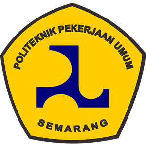

Resertifikasi & Extend Scope ISO 9001:2015 BRI INFRA Tahun 2023
Nama Klien: Bank Rakyat Indonesia (Persero) Tbk, PT (BRI) - IT Infrastructure & Operation Division (INFRA)
Lokasi Proyek: Jakarta
Waktu Pelaksanaan: April - September 2023
Posisi Penugasan: Lead Konsultan
Uraian Tugas: Memimpin Tim Konsultan dalam konsultasi untuk penerapan, pengembangan dan pemeliharaan peta proses bisnis dan SOP, serta penerapan Sistem Manajemen Mutu ISO 9001:2015
Jasa Konsultan Penyusunan Kebijakan dan Prosedur PT Asuransi Jiwa IFG Tahun 2023
Nama Klien: Asuransi Jiwa IFG, PT - Department Legal & Policy
Lokasi Proyek: Jakarta
Waktu Pelaksanaan: Maret - Desember 2023
Posisi Penugasan: Lead Konsultan
Uraian Tugas: Memimpin Tim Konsultan dalam konsultasi untuk penyusunan SOP dan perubahan format SOP yang ada di IFG Life.
Resertifikasi ISO 9001:2015 BIT
Nama Klien: Bringin Inti Teknologi, PT (BRI IT)
Lokasi Proyek: Jakarta
Waktu Pelaksanaan: Januari - Maret 2023
Posisi Penugasan: Lead Konsultan
Uraian Tugas: Memimpin Tim Konsultan dalam konsultasi untuk penerapan, pengembangan dan pemeliharaan peta proses bisnis dan SOP, serta penerapan Sistem Manajemen Mutu ISO 9001:2015
Revisi SOP SDM ASKRINDO
Nama Klien: Asuransi Kredit Indonesia. PT - Sumber Daya Manusia
Lokasi Proyek: Jakarta
Waktu Pelaksanaan: November 2022 - Februari 2023
Posisi Penugasan: Lead Konsultan
Uraian Tugas: Memimpin Tim Konsultan dalam konsultasi untuk penyusunan SOP dan perubahan format SOP yang ada di ASKRINDO
Surveillance 2 ISO 9001:2015 tahun 2022
Nama Klien: Bank Negara Indonesia, PT (BNI) - Div PFA Vm
Lokasi Proyek: BSD
Waktu Pelaksanaan: Oktober - November 2022
Posisi Penugasan: Lead Konsultan
Uraian Tugas: Memimpin Tim Konsultan dalam konsultasi untuk penerapan, pengembangan dan pemeliharaan peta proses bisnis dan SOP, serta penerapan Sistem Manajemen Mutu ISO 9001:2015
Surveillace II - ISO 9001 BRI AMK/FMA Tahun 2022
Nama Klien: PT. Bank Rakyat Indonesia (Persero) Tbk - Financial & Management Accounting (BRI AMK/ FMA)
Lokasi Proyek: Jakarta
Waktu Pelaksanaan: Oktober – November 2022
Posisi Penugasan: Lead Konsultan
Uraian Tugas: Memimpin Tim Konsultan dalam konsultasi untuk penerapan, pengembangan dan pemeliharaan peta proses bisnis dan SOP, serta penerapan Sistem Manajemen Mutu ISO 9001:2015
ISO 9001:2015 QMS Divisi Operasional - Pengadaan Barang/Jasa
Nama Klien: Bank Jabar Banten Syariah, PT (BJB Syariah) - Bagian Pengadaan
Lokasi Proyek: Bandung
Waktu Pelaksanaan: September – November 2022
Posisi Penugasan: Konsultan Pengganti
Uraian Tugas: Memimpin Tim Konsultan dalam konsultasi untuk penerapan, pengembangan dan pemeliharaan peta proses bisnis dan SOP, serta penerapan Sistem Manajemen Mutu ISO 9001:2015
Penyusunan Naskah Akadmeik BAKAMLA
Nama Klien: Badan Keamanan Laut
Lokasi Proyek: Jakarta
Waktu Pelaksanaan: Juni - Agustus 2022
Posisi Penugasan: Consultant
Uraian Tugas: Memimpin Tim Konsultan dalam konsultasi untuk Penyusunan Naskah Akademik
Penyusunan HRIS - KPK
Nama Klien: Biro SDM – Komisi Pemberantasan Korupsi
Lokasi Proyek: Jakarta
Waktu Pelaksanaan: Januari – Agustus 2022
Posisi Penugasan: Consultant
Uraian Tugas: Menyusun HRIS 2025 untuk KPK
Penyusunan Peta Proses Bisinis dan SOP – Bio Cycle
Nama Klien: PT. Bio Cycle Indonesia
Lokasi Proyek: Riau
Waktu Pelaksanaan: Januari – Juli 2022
Posisi Penugasan: Consultant
Uraian Tugas: Membantu dalam konsultasi untuk penerapan, pengembangan dan pemeliharaan peta proses bisnis dan SOP
Business Plan Telkom Akses
Nama Klien: Telkom Akses
Lokasi Proyek: Jakarta
Waktu Pelaksanaan: November 2021 – Juni 2022
Posisi Penugasan: Consultant
Uraian Tugas: Menyusun Business Plan 2022-2024
Penyusunan Jabatan Fungsional Dit PPL KEMKOMINFO
Nama Klien: Direktorat Pengembangan Pita Lebar Kementerian Komunikasi dan Informatika
Lokasi Proyek: Jakarta
Waktu Pelaksanaan: Juli – Desember 2021
Posisi Penugasan: Konsultan
Uraian Tugas: Memimpin Tim Konsultan dalam konsultasi untuk Penyusunan Jabatan Fungsional dari Direktorat Pengembangan Pita Lebar
Penyusunan Peta Proses Bisinis – Kementerian PUPR
Nama Klien: Kementerian PUPR
Lokasi Proyek: Jakarta
Waktu Pelaksanaan: Oktober – Desember 2021
Posisi Penugasan: Consultant
Uraian Tugas: Menyusun peta proses bisnis untuk Core Process
Penyusunan Peta Proses Bisinis – Pantau Gambut
Nama Klien: WRI Indonesia – Pantau Gambut
Lokasi Proyek: Jakarta
Waktu Pelaksanaan: Oktober – November 2021
Posisi Penugasan: Consultant
Uraian Tugas: Menyusun peta proses bisnis
Penyusunan Peta Proses Bisinis – Kementerian Luar Negeri
Nama Klien: Kementerian Luar Negeri
Lokasi Proyek: Jakarta
Waktu Pelaksanaan: Maret – Oktober 2021
Posisi Penugasan: Consultant
Uraian Tugas: Menyusun peta proses bisnis
Penyusunan Jabatan Fungsional Penyidik dan Penyelidik KPK
Nama Klien: Komisi Pemberantasan Korupsi
Lokasi Proyek: Jakarta
Waktu Pelaksanaan: Maret – Juli 2021
Posisi Penugasan: Consultant
Uraian Tugas: Memimpin Tim Konsultan dalam konsultasi untuk Penyusunan Jabatan Fungsional untuk Penyidik dan Penyelidik
Penyusunan Jabatan Fungsional Penyidik dan Penyelidik KPK
Nama Klien: Komisi Pemberantasan Korupsi
Lokasi Proyek: Jakarta
Waktu Pelaksanaan: Maret – Juli 2021
Posisi Penugasan: Consultant
Uraian Tugas: Memimpin Tim Konsultan dalam konsultasi untuk Penyusunan Jabatan Fungsional untuk Penyidik dan Penyelidik
ISO 9001:2015 dan ISO 37001:2016 CCG
Nama Klien: PT Cognos Cendekia Global
Lokasi Proyek: Jakarta
Waktu Pelaksanaan: Februari – Juni 2021
Posisi Penugasan: Consultant
Uraian Tugas: Memimpin Tim Konsultan dalam konsultasi untuk penerapan, pengembangan dan pemeliharaan peta proses bisnis dan SOP, serta penerapan Sistem Manajemen Mutu ISO 9001:2015 dan Sistem Manajemen Anti Penyuapan ISO 37001:2016
Casecading KPK – Level 2
Nama Klien: Komisi Pemberantasan Korupsi
Lokasi Proyek: Jakarta
Waktu Pelaksanaan: Januari – Juni 2021
Posisi Penugasan: Consultant
Uraian Tugas: Menyusun KPI untuk setiap Direktorat yang ada di KPK
ISO 21001:208 EOMS Politeknik PU
Nama Klien: Politeknik Pekerjaan Umum
Lokasi Proyek: Semarang
Waktu Pelaksanaan: Agustus 2020 – Juli 2021
Posisi Penugasan: Consultant
Uraian Tugas: Membantu Tim Konsultan dalam konsultasi untuk penerapan, pengembangan dan pemeliharaan peta proses bisnis dan SOP, serta penerapan Sistem Manajemen Organisasi Pendidikan ISO 21001:2018

ISO 9001:2015 API
Nama Klien: PT. Akses Pelabuhan Indonesia
Lokasi Proyek: Jakarta
Waktu Pelaksanaan: Agustus 2020 – Januari 2021
Posisi Penugasan: Analyst
Uraian Tugas: Membantu Tim Konsultan dalam konsultasi untuk penerapan, pengembangan dan pemeliharaan peta proses bisnis dan SOP, serta penerapan Sistem Manajemen Mutu ISO 9001:2015
Penyusunan Peta Proses Bisinis – KEMENDIKBUD
Nama Klien: Kementerian Pendidikan dan Kebudayaan
Lokasi Proyek: Jakarta
Waktu Pelaksanaan: Agustus – November 2020
Posisi Penugasan: Analyst
Uraian Tugas: Membantu Tim Konsultan dalam menyusun peta proses bisnis
Penyusunan Peta Proses Bisnis - BMKG
Nama Klien: Badan Meteorologi, Klimatologi, dan Geofisika
Lokasi Proyek: Jakarta
Waktu Pelaksanaan: Agustus – November 2020
Posisi Penugasan: Analyst
Uraian Tugas: Membantu Tim Konsultan dalam menyusun peta proses bisnis